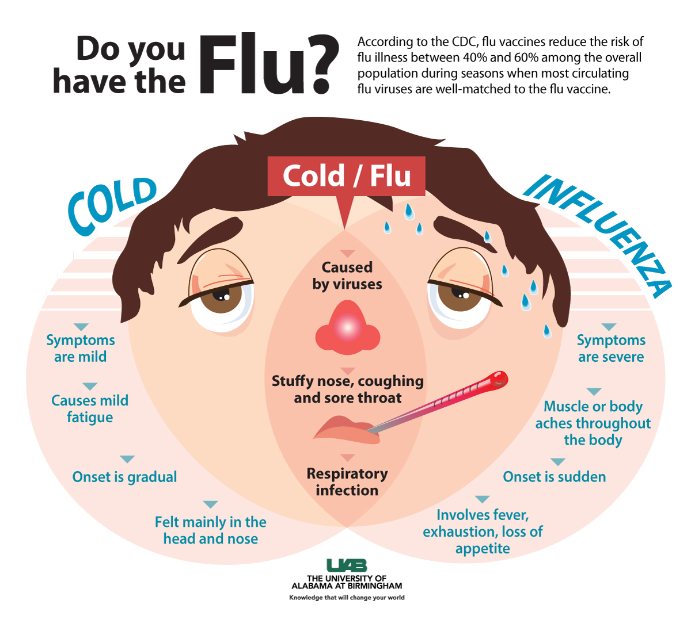
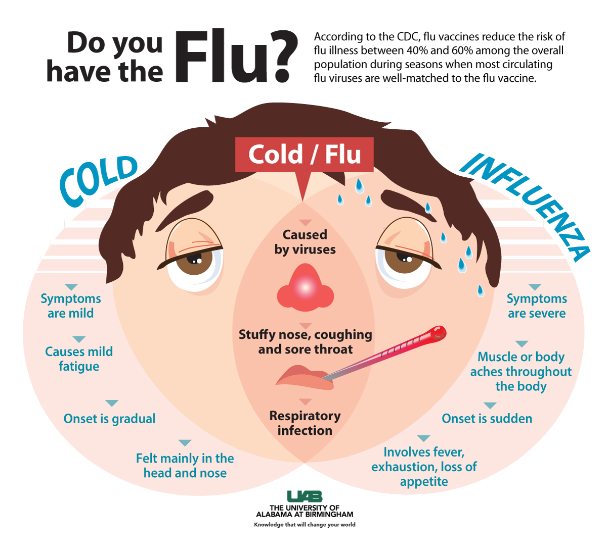

Welcome to the backgroud page! Here is where we will share how the influenza has impacted California. California is one of the many places around the wolrd that is greatly impacted by the flu. Commonly mistaken for the cold, the flu is a viral infection that affects the respiratory system. The flu can be a very serious illness, especially if not prevented against or treated early on. The disease caused by the virus influenza thrives in cold and dry climates which exist in California. The influenza virus has the ability to mutate,and therefore has different types or strains: A B C and D. Types A and B causes symptoms in humans, A being more severe. Symptoms include fever or chills,sore throat,runny nose,fatigue,headaches,and muscle soreness. In these strains, more varieties of the virus can exist. Because of this, vaccines and antiviral drugs become less effective ( influenza can mutate faster than scientists can create new vaccines). Although vaccines have negative aspects, they are the most effective way to protect yourself from the flu. Viruses cannot be cured, but can be prevented against with vaccines. Over the course of five weeks, our group was tasked with utilizing the 5 design thinking steps (empathize, define, ideate, prototype, and test)in order to create a solution to a specific problem such as an infectious disease. In our case, we chose Influenza as our main focus. Our goal was to find what problems surrounded this common virus and find a way to solve them. Throughout the project we used empathy to understand how people may feel. Furthermore, we interviewed various people in public settings in order to diversify our responses. We also interacted with professionals that worked on the influenza virus so as to receive a different perspectives. We discovered that students on the Berkeley campus didn't regard the flu as a threat. This was one of the main reasons they chose to be unvaccinated. However, we found this to be a problem because the flu can be potentially dangerous.
A clean water supply or source and nutrients like healthy food are essential for a patient recovering from the flu. Many of the remedies for the flu iclude over the counter drugs, this accessability contributes to the idea that the influenza is not a serious virus. Things like Throat Lozenge are soothing medications that coat swolen and irritated areas within the throat. Furthermore, while being affected by the flu it is important to refrain from participating in draining physical activities that may further impair your condition. The symptoms of the flu are very similar to those of the common cold which may be why it is misdiagnosed often. Symptoms include pains in muscles all around the body, exhaustion that manifests through fragility, warm skin that appears red or flushed, overly moist eyes, head pain, cough, sore throat and excess mucous.
Based off interviews that we conducted around the Berkeley campus we found that students generally were not vaccinated. The reasons for their lack of immunization that they posed to us varied. Some students said that commuting to a local shop for vaccinations was not convient or that it was not their top priority. Other students mentioned prior experiences with the vaccination that did nothing to immunize them against specific flu strains. As a group we found that most students felt similarly. Thus we concluded that a convinient and fast innovative way of getting vaccinated was important to invest time into, with this is mind we created QUICK-VAX. QUICK-VAX is specifically desgined for college students and children. It is a way to get vaccinated without the hastle of having to travel to a local pharmacy. Furthermore, the product would not be in vaccine form, thus the discomfort and pain experienced by patients that are vaccinated is more than those who use QUICK-VAX.